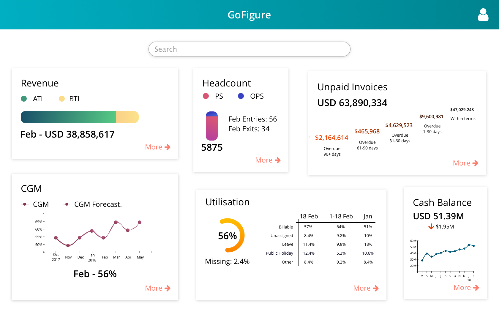

×

Operational Insights
Description :
The assimilation, visualisation, and forecasting of all operational information of ThoughtWorks in one place, built to assist the leadership team in making crucial strategic decisions.
Dashboard Redesign :
Role played :
Developer, UX Trainee
User Interviews :
We conducted a string of User Interviews to understand the user better by asking questions like:
- What does your typical day entail?
- What data do you use and share?
- What statistics are you most interested in?
- What are some day to day decisions you have to make?
- What are the longer term decisions you have to make?
- What is the most troublesome part of your day?
- What tools do you use to get your work done?
- What are the departments/people you communicate with on a daily basis?
- What is something you miss in GoFigure and wish it had?
User Persona :
- 40 years old.
- Married with two children.
- Travels for work an avg. of 3 days a week.
- Constantly in meetings or phone calls and requires financial information for most of them.
- Most commonly used tool is Excel.
- Responsible for contribute to long-term and short-term managerial decisions.
The Redesign (Ongoing)

After working on the project, I did a redesign of the dashboard, applying the feedback from the users and knowledge of the domain. What did I change?
- Data driving tile size as opposed to tile size driving data.
- Removal of data that was not being utilised.
- Adding more information in the home page through interactions.
My Learnings :
- This project allowed us to be in close contact with the users, as they were all employees of the company itself. This resulted in receiving continual feedback from the users allowing us to modify the product as we went along and really driving us to make user centric decisions.
- I got chances to shadow the Experience Designer on the team and understand the design process. I also shadowed user interviews which gave me a chance to see how the user directly interacts with the product for their use cases and participated in design sprints.
- Understanding operational factors like revenue, gross margins, utilisation etc and how they factor into business decisions.
- The team adapted the Kanban Process after which we were able to visibly see the increased rate in delivery of features.
- The infrastructure went through a migration to Amazon Web Services(AWS) which gave me the opportunity to help set up the systems from scratch in a new environment.
- Building a Continuous Integration environment and Continuous Deployment pipelines from scratch using GO.
- Clojure (Functional Programming)
- Angular JS
- D3
- ClojureScript